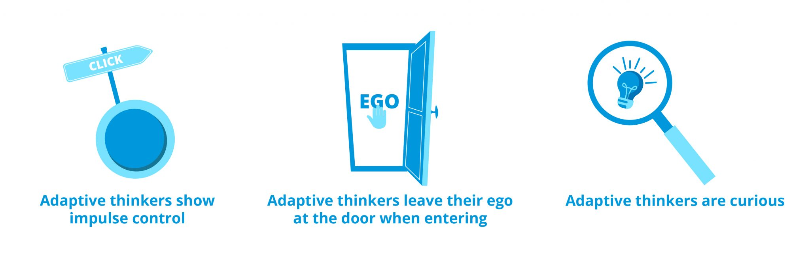

Adaptive Thinking involves the ability to recognize unexpected situations, quickly consider various possible responses, and decide on the best one.
Adapting to changes in any environment requires two things: the skill to do so and the will to endure. An unexpectedly low earnings report can send your spirits down fast—along with your paycheck—so the degree to which you can manage yourself amidst unexpected turmoil will determine just how well you perform after receiving bad news.